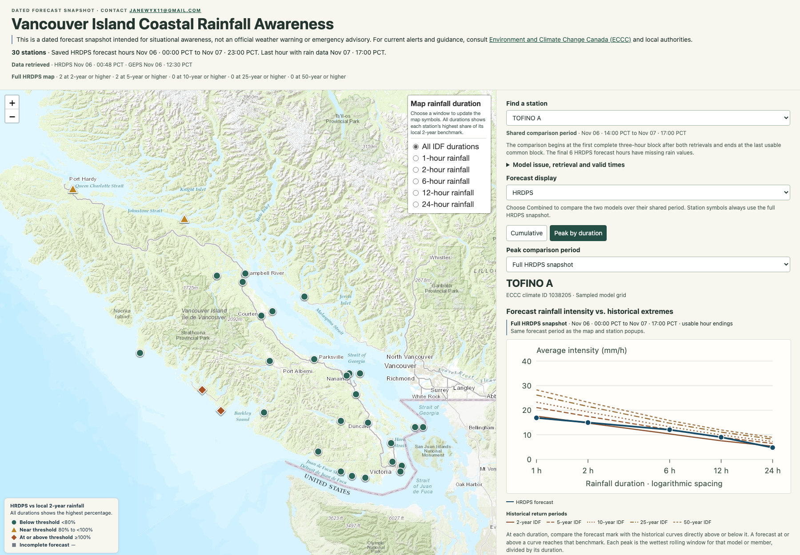

A situational-awareness prototype shaped by my work developing dashboards and bulletins for atmospheric-river and debris-flow response. It helps move from a regional forecast to the stations, durations and historical context that deserve closer review.
Project
Independent prototype · 30 Day Map Challenge
Methods
Python · rolling rainfall totals · IDF comparisons
Coverage
30 station locations · November 6–7, 2026 snapshot

01 / Rainfall Watch
A saved view of the original dashboard. The map supports a quick regional scan of forecast rainfall against local historical benchmarks, while the inspector opens a station-level view of timing and intensity.
A response question
During a heavy-rain event, a regional total is only a starting point. Response reporting needs to show where rainfall may be unusual for the location, whether it arrives as a short burst or a sustained accumulation, and where an analyst should look next.
This project compares forecast rain at weather-station coordinates with local intensity–duration–frequency (IDF) benchmarks. The map uses colour and shape together: green circles below 80% of the local two-year depth, amber triangles from 80% to below 100%, and orange diamonds at or above it. The 80% boundary is a display convention. The all-duration view shows each station’s highest percentage across the assessed durations.
From forecast to comparison
To make the forecast usable in a repeatable briefing workflow, the Python pipeline samples HRDPS data at 30 station locations and calculates peak rainfall totals over complete 1-, 2-, 6-, 12- and 24-hour windows. Each total is matched to the corresponding rainfall depth in the local ECCC IDF station file. The intensity chart expresses these depths in millimetres per hour.
A separate GEPS ensemble snapshot supports comparison over a shared valid-time period. Cumulative rainfall starts from a common zero; peak comparisons retain each model’s native time resolution. Missing rainfall stays missing, and incomplete windows are excluded.
Designed for triage
Scan the region
Station symbols make locations approaching or exceeding a benchmark visible without asking the reader to interpret every forecast value. Selecting a duration separates short, intense rainfall from longer accumulations.
Inspect the timing
The cumulative view shows when rainfall builds through the shared comparison period. The peak view compares short bursts and sustained rainfall against historical curves, and station popups connect each mapped signal to its rainfall depth and window ending.